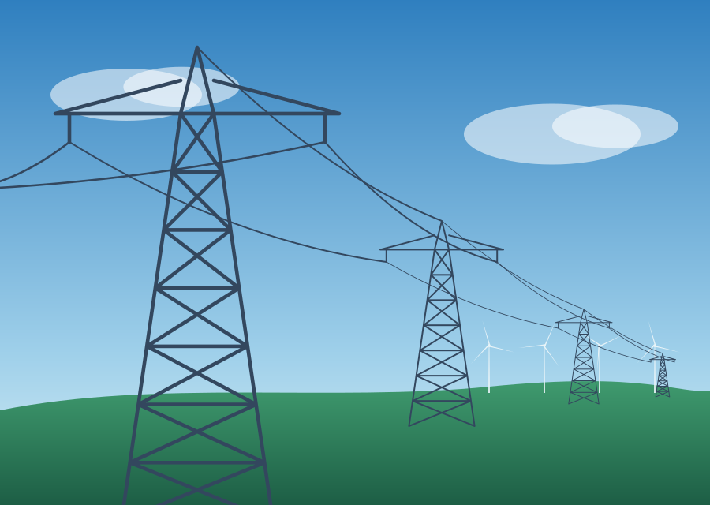
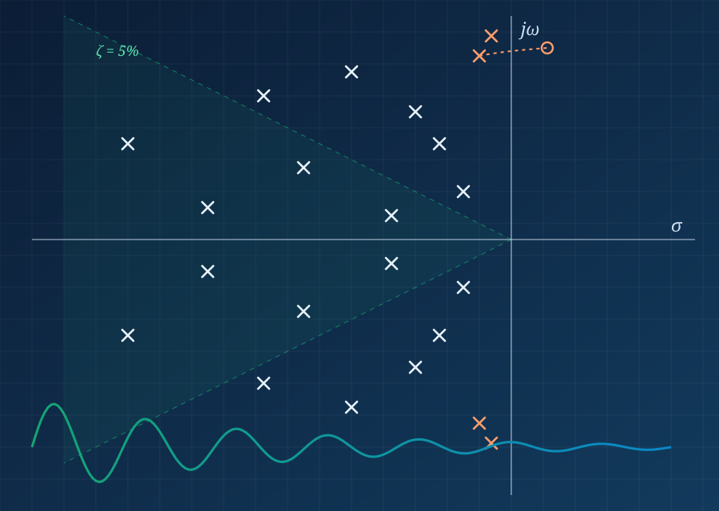
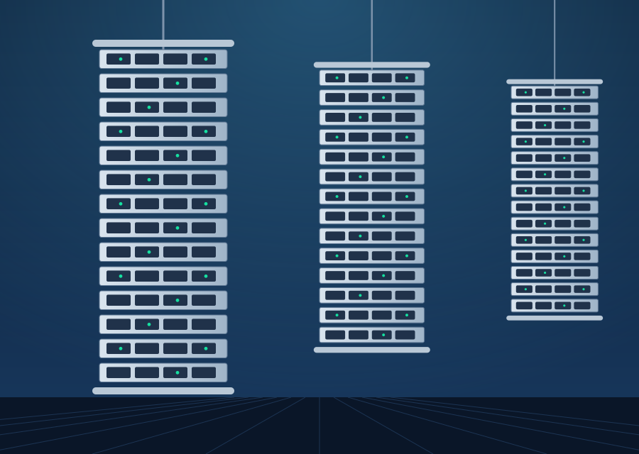
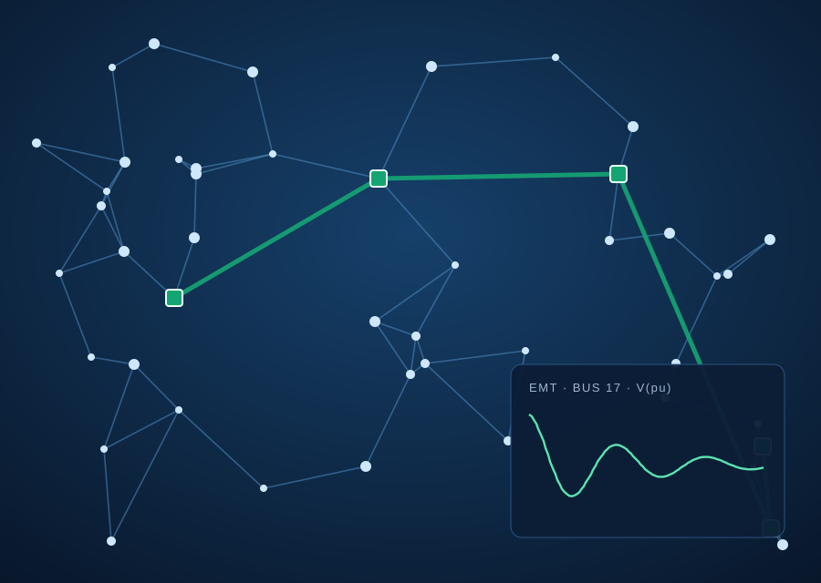

HVDC grids
HVDC grids and hybrid AC/DC systems
Pdc = Vdc · Idc
Modelling, dynamics and control of HVDC grids and hybrid AC/DC systems, including HVDC grid overlays that relieve congestion in existing networks.

Our work spans the design of individual converters, the way many converters interact on one grid, and the computation needed to study large networks. Each direction feeds the others.

Modelling, dynamics and control of HVDC grids and hybrid AC/DC systems, including HVDC grid overlays that relieve congestion in existing networks.

Design and implementation of MMCs, robust controller design, operation in unbalanced and weak AC systems, and laboratory-scale prototypes.
Eigenvalue-based and frequency-domain methods to identify interactions and stability margins among converters, including multi-vendor and black-box systems.

Scalable analysis tools and simulation frameworks for large converter-dominated networks, including grey-box and black-box converter modelling.
How a synchronous generator's rotor angle responds to a sudden increase in mechanical power. Change the parameters and watch stability appear or disappear.
Rotor angle δ after a sudden increase in mechanical power.
Collaborations, student enquiries and visits are welcome. Write to lokesh@iiti.ac.in or use the contact form.